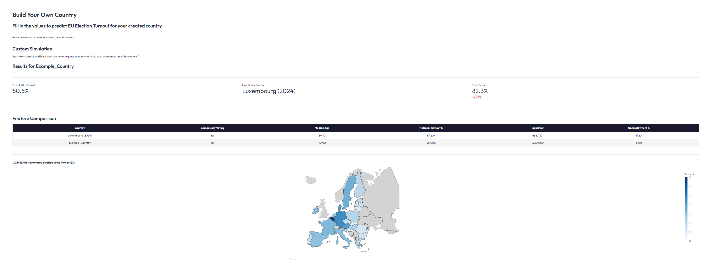
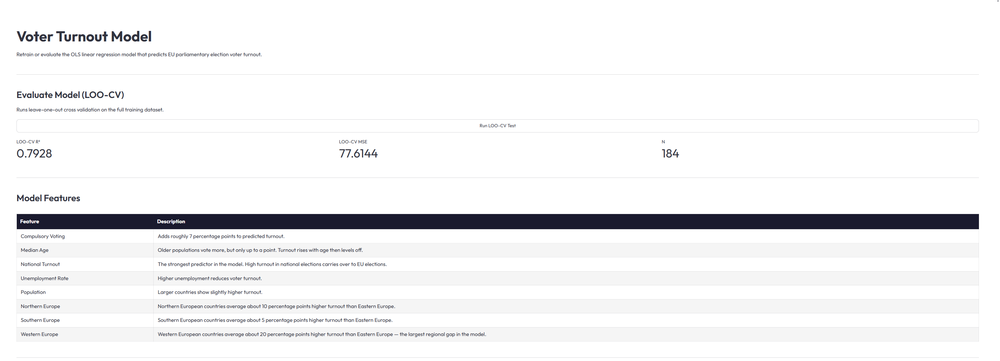
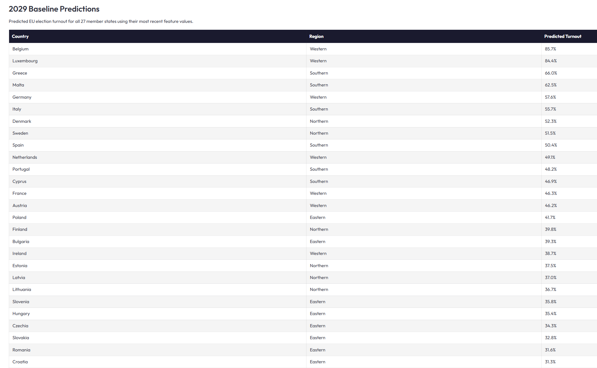

An interactive civic education platform that teaches people about the European Union through personalized lessons, simulations, and real-world data built for the CS4973 Belgium Dialogue.
An OLS linear regression model predicting EU parliamentary election voter turnout, validated with leave-one-out cross-validation across every historical observation rather than a single train/test split.

The "Build Your Own Country" simulation: a student enters values like population, median age, unemployment, and whether voting is compulsory, and the model predicts EU election turnout for that hypothetical country. Here it predicts 80.5%, close to Luxembourg's real 2024 turnout of 82.3%. A feature-comparison table and turnout map ground the prediction against real countries rather than leaving it as an abstract number.

The model page itself. It's accessible from the admin persona and lets the admin run tests on the model. This page also contains information on the features: compulsory voting adds roughly 7 points of turnout, national turnout is the strongest single predictor, and regional effects range from a 5-point gap for Southern Europe up to a 20-point gap for Western Europe, both relative to an Eastern Europe baseline.

The admin also has access to predicted 2029 turnout for all 27 member states using each country's most recent feature values, ranging from Belgium at 85.7% down to Croatia at 31.3%.
My contribution was the voter turnout model end to end: feature selection, the OLS regression itself, LOO-CV validation, and the baseline forecast for all 27 member states. Rather than treating turnout as an abstract statistic, the model is exposed directly in the app. Students can build a hypothetical country and see a real prediction, and the model's own evaluation page is public rather than hidden in a notebook.
The rest of the platform, built alongside three teammates, wraps that model in a full civic education experience: three role-based views (Student, Teacher, EU Official) share the same underlying data, so personalized lessons, content authoring, and platform moderation all sit on one system rather than three disconnected tools.
Built as a 4-person team over one semester as part of the CS4973 Belgium Dialogue, integrating a Streamlit frontend, a relational database, and the model into one cohesive product on a fixed deadline.
The live link is the full platform built by all 4 teammates, not just the turnout model above.